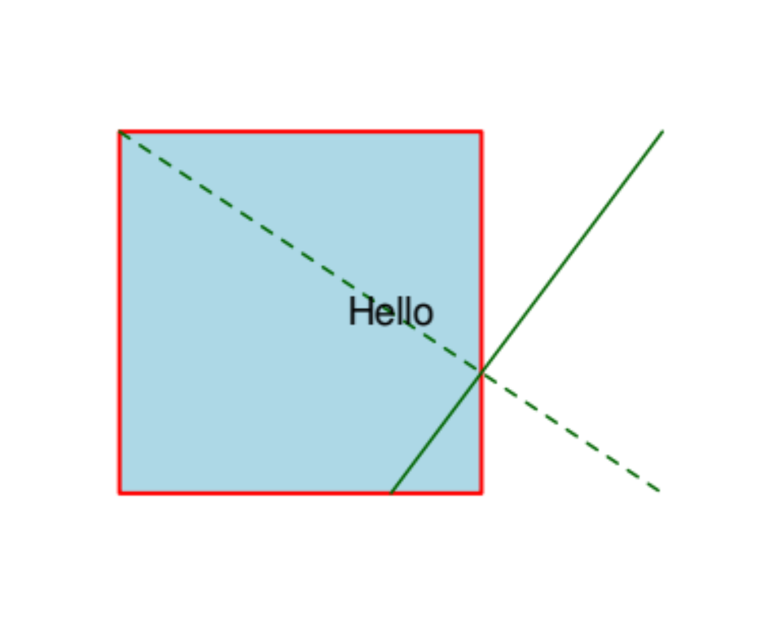

pdf_render_page() rasterises a PDF page through PDFium’s
renderer. The result is a pdfium_bitmap S3 object that
inherits from base R’s nativeRaster, so it plugs into
graphics::plot(), graphics::rasterImage(), and
grid::rasterGrob() with no conversion. Three converters
cover the other common shapes downstream packages expect.
library(pdfium)
fixture <- system.file("extdata", "fixtures", "shapes.pdf",
package = "pdfium"
)A first render
doc <- pdf_open(fixture)
bmp <- pdf_render_page(doc, dpi = 96)
bmp # a one-line summary
#> <pdfium_bitmap 384x288 @ 96 dpi, page 1 of shapes.pdf>
dim(bmp) # height, width in pixels
#> [1] 288 384
plot(bmp) # uses plot.pdfium_bitmap()
The plot() call dispatches to
plot.pdfium_bitmap(), which opens a fresh plot window with
asp = 1 and zero margins and draws the bitmap with
[graphics::rasterImage()]. Pass interpolate = FALSE when
you want pixel-exact (nearest-neighbour) display of a small bitmap —
useful for embedded raster fixtures.
The bitmap’s dimensions scale linearly with dpi. At the
default dpi = 72, one pixel per PDF point: a 4 × 3 inch
page becomes 288 × 216 pixels. At dpi = 144, the same page
is 576 × 432.
dim(pdf_render_page(doc, dpi = 72))
#> [1] 216 288
dim(pdf_render_page(doc, dpi = 144))
#> [1] 432 576Background and transparency
The default background is white. Pass any colour string
grDevices::col2rgb() understands, or NA for
transparent:
bmp_red <- pdf_render_page(doc, dpi = 72, background = "red")
bmp_trans <- pdf_render_page(doc, dpi = 72, background = NA)
bmp_red[1L, 1L] # top-left pixel
#> [1] -1
bmp_trans[1L, 1L] # depends on whether page content covers
#> [1] -1Rotation
Rotation in degrees, applied on top of the page’s own
/Rotate attribute. Rotating 90 or 270 swaps the bitmap’s
width and height:
dim(pdf_render_page(doc, dpi = 72, rotation = 0))
#> [1] 216 288
dim(pdf_render_page(doc, dpi = 72, rotation = 90))
#> [1] 288 216
dim(pdf_render_page(doc, dpi = 72, rotation = 180))
#> [1] 216 288
dim(pdf_render_page(doc, dpi = 72, rotation = 270))
#> [1] 288 216Converting to other shapes
# A 3D numeric array [H, W, 4] with values in 0..1 - matches the
# format png::writePNG() and pdftools::pdf_render_page() both produce.
arr <- as.array(bmp)
dim(arr)
#> [1] 288 384 4
range(arr)
#> [1] 0 1
# Base R "raster" object - character matrix of "#RRGGBBAA" hex colors.
ras <- as.raster(bmp)
ras[1L, 1L]
#> [,1]
#> [1,] "#FFFFFFFF"
# A plain character matrix (drops the "raster" class).
mat <- as.matrix(bmp)
class(mat)
#> [1] "matrix" "array"Saving to PNG
For a one-call save, pdf_render_to_png() writes the
rendered bitmap to a PNG file. It needs the png package (a
Suggests dependency):
out <- tempfile(fileext = ".png")
pdf_render_to_png(doc, file = out, dpi = 96)
file.exists(out)
#> [1] TRUE
file.size(out)
#> [1] 5679Annotations
pdf_render_page(annotations = TRUE) paints annotation
appearance streams on top of the page. shapes.pdf has no annotations so
the flag is a no-op here; on annotated PDFs the rendered bitmap visibly
changes.
Working with embedded images
For each "image"-typed page object, three accessors
return rendered or raw image data with the same
pdfium_bitmap shape:
img_fixture <- system.file("extdata", "fixtures", "image.pdf",
package = "pdfium"
)
img_doc <- pdf_open(img_fixture)
img_page <- pdf_load_page(img_doc, 1L)
imgs <- Filter(function(o) o$type == "image", pdf_page_objects(img_page))
# Decoded source-pixel bitmap (no CTM applied).
src <- pdf_image_bitmap(imgs[[1L]])
dim(src)
#> [1] 16 16
# CTM-applied rendering (what a viewer would actually draw).
viewer <- pdf_image_rendered(imgs[[1L]])
dim(viewer)
#> [1] 134 134For saving the original embedded asset without re-encoding, the raw-bytes path is useful:
filters <- pdf_image_filters(imgs[[1L]])
filters
#> [1] "FlateDecode"
raw_bytes <- pdf_image_data(imgs[[1L]], decoded = FALSE)
length(raw_bytes)
#> [1] 32When filters contains "DCTDecode", the raw
bytes are the original JPEG; when it contains "JPXDecode",
they’re JPEG 2000; for "FlateDecode" they’re
Deflate-compressed pixels. See pdf_image_filters()
for the full enumeration of common decoders.
Cleanup
pdf_close_page(img_page)
pdf_close(img_doc)
pdf_close(doc)